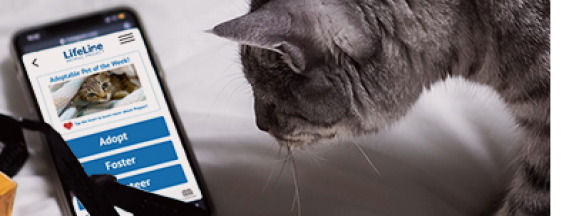
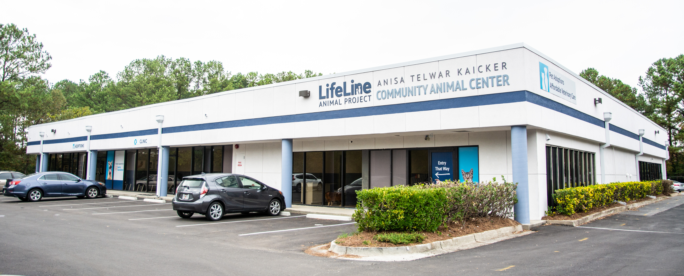
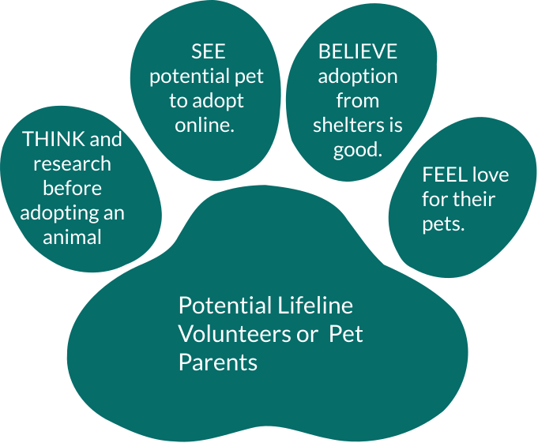
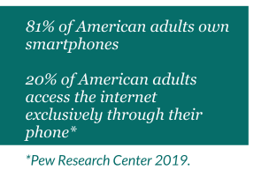

The Lifeline Animal Project App
Solving communication lags by creating an interactive interface for users.
The app’s home page features the three primary objectives of the organization, Adopt, Foster, or Volunteer.
LifeLine Animal Project is an Atlanta-based nonprofit providing no-kill solutions for
homeless dogs and cats in Atlanta since 2002. The shelter homes animals living in their three shelters into either
a foster or adoptive family. Alongside a team of user experience researchers and writers, I designed a unique
“pet-dating” feature to assist animal lovers in finding their perfect pet.
According to our user research, people interested in volunteering or adopting with Lifeline Animal Project often
have trouble getting in touch with Lifeline Animal Project. During user interviews, many reported unanswered phone
calls, and several did not know fostering animals was an option.
Notes derived from user interview transcripts organized on a Miro board.
The nonprofit receives on average 40-60 animals a day, so the day-to-day tasks of caring for these animals take up the majority of Lifeline employees' time. The shelter needs a low-matainnience mechanism for sharing up-to-date info about available animals. Animal lovers in Atlanta need an easy way to discover how they can contribute to Lifeline Animal Projects mission.
The LifeLine Community Animal Center opened in 2019 in DeKalb County.
Animal lovers are not limited to a particular demographic. Therefore, our team found that a user persona was unhelpful in this case. Instead, the best way to describe supporters of the Lifeline Animal Project was by personality traits and an empathy map. Our fosterer, adopter, or volunteer would likely be empathetic, thoughtful, and responsible. These people choose to adopt from a shelter, not a puppy farm, and tend to think of the animal as a close member of the family. Their main concern is finding a pet that will fit well in their home.
Paw-shaped empathy map
I brainstormed useful features that would improve communication between the shelter and the community. Matchmaking, placing the right animal with the right foster or adoptive parent, is a neglected component in Lifeline Animal Project’s current website. I hypothesized that if users could easily find the right pet and apply for adoption from their phone, then communication between the shelter and potential foster/adopt parents would be easier as a whole. A swiping feature, similar to popular dating apps, would encourage users to consider a variety of potential pets. This method could provide real-time feedback for users with minimal work required of shelter employees.
As a mobile app, matchmaking would streamline the process to meet lovable furry friends and
make Lifeline resources more accessible to the community.
Before designing the full application, my team and I developed a comprehensive user flowchart. This document
described the necessary screens for the app, from onboarding to completing a foster parent application. We
designed the information architecture of the app to contain three distinct paths for the user, based on their
needs. On the home screen, the user indicates if they would like to learn more about adopting, fostering, or
volunteering with Lifeline Animal Project. The app responds to their preference without leaving out important
details about Lifeline and its resources.
Since the home page is crucial to navigation within the app, we conducted A/B testing by testing three different
homepage wireframes with users. Users preferred different screens for distinct reasons. Therefore, as a team, we
designed a home page that reflected each of these user preferences. I contributed a popular "Pet of the Week"
banner. This detail draws app visitors to the pet profiles and matching feature.

homepage screens used in A/B testing

final homepage design
During user testing, I noticed that potential pet parents loved learning about available animals and often developed a working list of furry friends whom they wanted to meet. Therefore, I designed a pet matching feature that offered users the opportunity to build a list of favorites of the animals at the shelter. The carousel design offers a peek of the next recommended pet, so the app visitor understands to swipe through their options. With an intuitive click on the orange heart, potential pet parents collect their favorite pets on one page. From this page, the user could easily schedule a foster or adoption appointment with Lifeline. During the Covid-19 pandemic, the shelter required appointments, therefore, this feature became increasingly relevant.
.gif)
gif of swiping feature and favorites page
The Lifeline Animal Project mobile app prioritizes the mission of saving animal lives in Atlanta by featuring their furry guests on every page. Adoptable animals, who might not be considered in a traditional list format are viewed more in the carousel view. Potential pet owners are better informed about how Lifeline cares for animals and conducts adoptions. The mobile app design improves communication between the shelter and the community by making it easy to learn more about adoptable animals and schedule an appointment. From this project, I learned that listening to user's concerns during user research and user testing is essential for designing a functional mobile app.